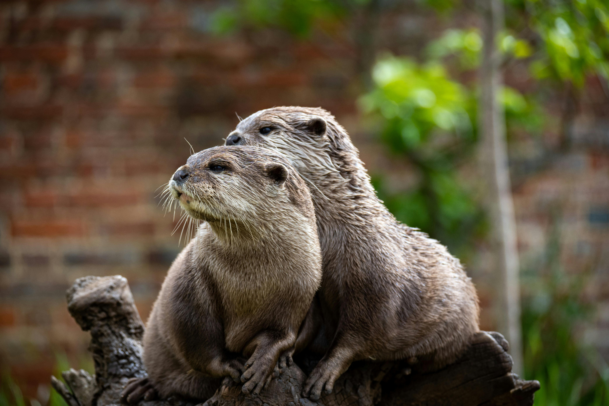

Otters are carnivorous mammals in the subfamily Lutrinae. The 13 extant otter species are all semiaquatic, aquatic, or marine.
The word otter derives from the Old English word otor or oter. This and cognate words in other Indo-European languages ultimately stem from the Proto-Indo-European root *wódr̥, which also gave rise to the English word "water".
An otter's den is called a holt, or couch. Male otters are called dogs or boars; females are called bitches or sows; and their offspring are called pups or cubs. The collective nouns for otters are bevy, family, lodge, romp (being descriptive of their often playful nature), or, when in water, raft.
The feces of otters are typically identified by their distinctive aroma, the smell of which has been described as ranging from freshly mown hay to putrefied fish; these are known as spraints.
Otter's lives are interesting:
Their diet is as follows:
These are some of the extant species:
The smooth-coated otter (Lutrogale perspicillata) is a freshwater otter species from regions of South and Southwest Asia, with the majority of its numbers found in Southeast Asia.
Some images:
